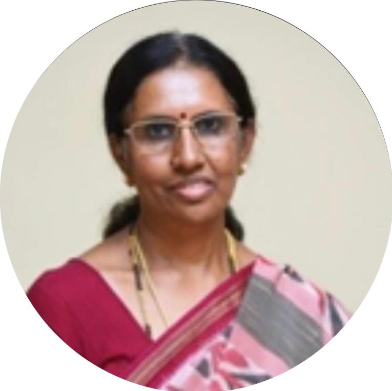
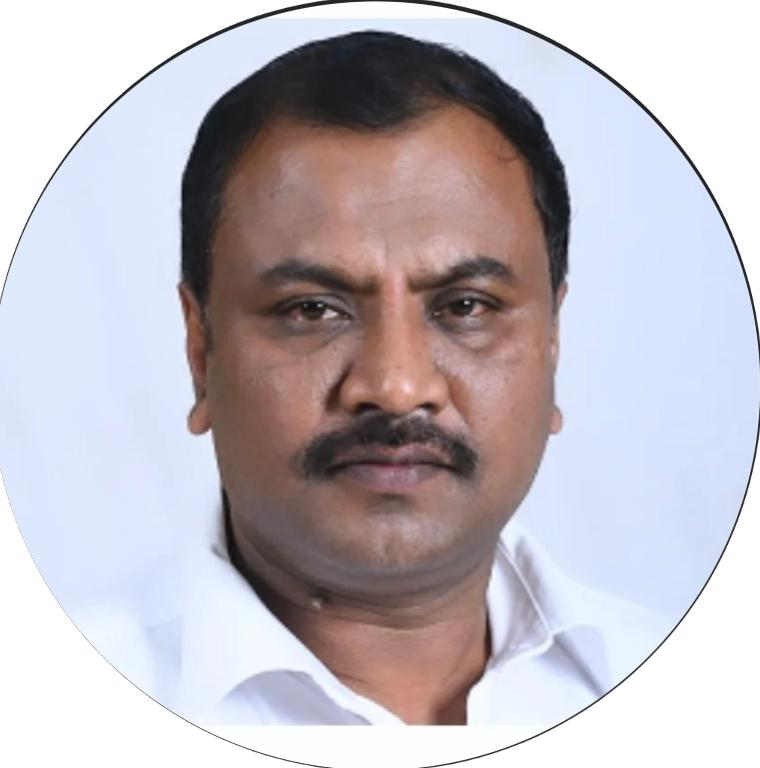

Department Of Electronics And Communication Engineering
PRESENTS
A State Level Technical Event

About Us
Since its inception in 1971, the department of Electronics and Communication Engineering (ECE) at
NIE has been at the forefront pioneering research and education in its field. The department is a trailblazer in the
Internet of Things (IoT), being the first to offer an academic course on the subject strongly supported by a full-fledged
laboratory set up with generous contributions from its alumni. As a dynamic community of enthusiasts, we delve into the
ever-evolving world of electronics and communication technologies. From innovative advancements to collaborative projects,
our association is a hub for learning, networking, and fostering a shared enthusiasm for the limitless possibilities in this
rapidly evolving field. We are the pulse of technological exploration, bringing together students passionate about electronics
and communication. From circuitry to wireless systems, our association is a vibrant community that sparks innovation and fosters
collaboration. Whether you're a seasoned enthusiast or just beginning your journey, join us in navigating the exciting landscapes
of electronic engineering and communication technologies. Our motto is to connect, learn, and shape the future together!

Dr. Rohini Nagapadma
Principal

Dr. S Parmeshwara
HOD & Faculty Chairperson
Technical Events
Project and Poster Presentation
- Machine Learning
- Robotics
- Embedded Systems
- Control System
- Digital Signal Processing
- Control Systems
- Wireless Communication
- Biomedical Electronics
- Artificial Intelligence
- Image Processing
Contact Here
Since its inception in 1971, the department of Electronics and Communication Engineering (ECE) at
NIE has been at the forefront pioneering research and education in its field.The department is a trailblazer in the
Internet of Things (IoT), being the first to offer an academic course on the subject strongly supported by a full-fledged
laboratory set up with generous contributions from its alumni.As a dynamic community of enthusiasts, we delve into the
ever-evolving world of electronics and communication technologies. From innovative advancements to collaborative projects,
our association is a hub for learning, networking, and fostering a shared enthusiasm for the limitless possibilities in this
rapidly evolving field. We are the pulse of technological exploration, bringing together students passionate about electronics
and communication. From circuitry to wireless systems, our association is a vibrant community that sparks innovation and fosters
collaboration. Whether you're a seasoned enthusiast or just beginning your journey, join us in navigating the exciting landscapes
of electronic engineering and communication technologies. Our motto is to connect, learn, and shape the future together!